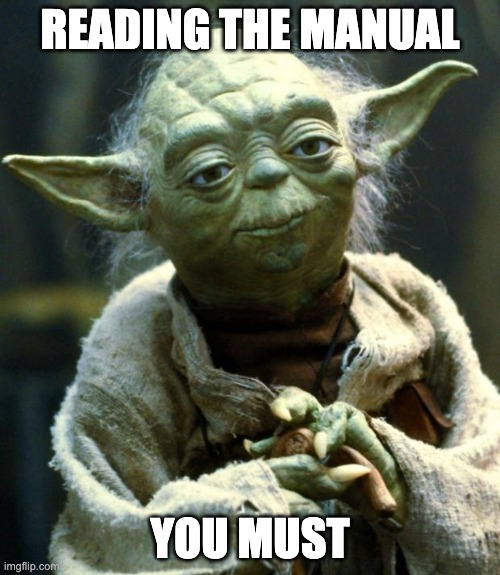

{kind=link}
flowchart LR
subgraph R[Rahmen]
direction LR
subgraph V[Theorie]
direction TB
E[Themawahl] --> Um[Schreiben]
end
subgraph M[Empirie]
direction TB
M1[Studiendesign] --> Vis[Messinstrumente]
Vis --> U[Stichprobe]
U --> G[Auswertung]
end
subgraph N[Fertigstellen]
direction TB
D[Diskutieren]
end
V --> M
M --> N
end
Forschungsprojekt
1 Hinweise

Photograph by Orren Jack Turner, Princeton, N.J., Public Domain
1.1 Was rät Meister Yoda?
Meister Yoda rät: Lesen Sie die Hinweise (Abbildung 1.1).

1.2 Ihr Lernerfolg
1.2.1 Lernziele
Wichtig
Kurz gesagt: Sie lernen, eine echte, eigene Studie zu erstellen.\(\square\)
- Die Studentis können eigenständig einige Arten von quantitativen psychologischen Studien in allen wesentlichen Schritten durchführen, d.h. planen, erheben, auswerten, interpretieren und zusammenschreiben.
- Im Hinblick auf Versuchsplanung können die Studentis Versuchspläne passend zu ihrer Forschungsfrage auswählen und kritisch bewerten; darüber hinaus können Sie Fallzahlen vorab planen.
- Im Hinblick auf Datenerhebung können die Studentis für ihre Forschungsfrage passende Messinstrumente auswählen. Zentrale rechtliche und ethische Aspekte sind ihnen bekannt. Softwarelösungen zur Datenerhebung können sie auswählen und einsetzen. Probleme und Lösungen im Hinblick auf Störvariablen können sie diskutieren.
- Im Hinblick auf Datenauswertung können die Studentis die Verfahren aus den Modulen QM1 und QM2 praktisch auf ihre eigenen Daten anwenden.
- Im Hinblick auf Interpretation von Versuchsergebnissen wissen die Studentis um die Grenzen der internen und externen Validität bestimmter Versuchspläne, von Störfaktoren und “Researchers’ Degrees of Freedom”.
- Im Hinblick auf die Berichtlegung von Studienergebnissen sind die Studentis in der Lage, die Methoden aus dem Modul Wissenschaftliches Arbeiten auf ihre eigene Studie hin anzuwenden.
- Die Studentis können quantitative psychologische Studien auf ihre Güte hin kritisch untersuchen.
1.2.2 Was lerne ich hier und wozu ist das gut?
Ein Forschungprojekt ist das vielleicht schönste Projekt in Ihrem Studiengang: E s vereint echtes Problemlösen mit Kreativität und wohl fundierter Analyse. Sie haben viele Freiheitsgrade: Führen Sie eine echte Studie durch, unterstützt von den Dozentis und nach Ihren Vorstellungen. Jedes Mal erlebt man als Dozenti aufs Neue studentische Studien, die begeistern. Um nur ein Beispiel zu nennen: Vor einiger Zeit zeigt eine Gruppe, dass es sich lohnt, Follower bei Instagram zu kaufen – die Anzahl der Likes steigt überproportional an. Ach ja, falls Sie es sich schon mal gefragt haben: Wer als Mann mit einem Sportwagen auf dem Profilfoto der Single-Börse posiert, erntet ebenfalls mehr Likes als ohne Karre, zumindest laut einem studentischen Experiment … Vielleicht sollten Sie diese Studie auch dringend replizieren, vielleicht wurde ja ein entscheidendes Detail übersehen? Die Forschung wartet auf Sie!
Kurz gesagt lernen Sie also, wie man eine wissenschaftliche Studie durchzieht. Das können Sie als Generalprobe für die Abschlussarbeit nutzen. Für Ihre berufliche Laufbahn ist Forschungskompetenz vielleicht eine zentrale Kompetenz, wenn Sie nicht nur Bekanntes abarbeiten möchten, sondern Abläufe verbessern, Produkte erneuern, Chancen entdecken wollen – wenn Sie Neuland betreten und Dinge weiterentwickeln wollen. Let’s do it.
1.2.3 Voraussetzungen
Um von diesem Kurs am besten zu profitieren, sollten Sie Folgendes mitbringen:
- Bereitschaft, Neues zu lernen
- Kenntnis grundlegender Methoden wissenschaftlichen Arbeitens
- Kenntnis in grundlegenden statistischen Verfahren (EDA, Regression, Inferenz)
1.2.4 Überblick
Abb. Abbildung 1.2 gibt einen Überblick über den Verlauf und die Inhalte des Buches. Das Diagramm hilft Ihnen zu verorten, wo welches Thema im Gesamtzusammenhang steht.
Das Diagramm zeigt den Ablauf einer typischen Datenanalyse. Natürlich kann man sich auch andere sinnvolle Darstellungen dieses Ablaufs vorstellen.
1.3 Lernhilfen
1.3.1 Projektplanung
Wie lange dauert es von “Start” bis “Ziel”? Tabelle 1.1 überschlägt den Zeitbedarf grob und bricht in die wesentliche Arbeitsschritte herunter.
| Nr | Arbeitsschritt | Zeitbedarf | Kommentar |
|---|---|---|---|
| 1 | Themawahl und Literaturarbeit | 5 Wochen | Integratives Sichten und Einarbeiten in Ihr Thema |
| 2 | Versuchsplanung | 4 Wochen | Planen des Forschungsdesigns inkl. der Messinstrumente |
| 3 | Versuchsdurchführung | 2 Wochen | Erheben der Daten |
| 4 | Datenauswertung | 3 Wochen | Statistik |
| 5 | Berichtlegung | 3 Wochen | Zusammenschreiben und Finalisieren des Berichts |
Beachten Sie, dass die einzelnen Arbeitsschritte sich teilweise überlappen.
Es können nur grobe Richtwerte angegeben werden, da die Zeiten je nach Thema, Person und Rahmenbedingungen variieren. Es bietet sich an, die Ergebnisse jedes Arbeitsschrittes in Rohform zu strukturieren und zu dokumentieren, so dass während der Berichtlegung nur noch ein Zusammenschreiben stattfindet.
Tatsächlich ist ein großer Teil der Arbeit lesen und sich Gedanken machen - nicht schreiben. Denn sobald man weiß, was man schreiben soll, schreibt’s sich auch schnell. Andernfalls ist es eine Qual. 🙅♀️ Don’t do it.
Abbildung 1.3 gibt Ihnen eine Orientierung, welchen Zeitanteil Sie für die einzelnen, wesentlichen Arbeitsschritte bei der Durchführung Ihrer Studie (bzw. der Dokumentation dazu) Sie einplanen sollten.
Dieser Plan geht von ca. 15 Wochen Laufzeit (in tutto) aus mit Beginn in KW 11 (w.11) und Ende in KW 24 (w.24); passen Sie den Plan ggf. auf Ihre Projektlaufzeit an.
Vorsicht vor Aufschieberitis
Der häufigste Fehler (mit potenziell schwerwiegenden Folgen) in Projektarbeiten wie dieser ist, die Arbeit zu lange aufzuschieben. Das führt zu Stress gegen Ende der Projektlaufzeit - und mitunter zu (erheblichen) Qualitätseinbußen.\(\square\)
1.3.2 Weitere Lernhilfen
Hier finden Sie einen Überblick über weitere Lernhilfen.
1.4 Hinweise zum Unterricht
1.4.1 Didaktik
Hier finden Sie didaktische Hinweise zu diesem Modul.

1.4.2 Organisatorische Hinweise
Hier finden Sie organisatorische Hinweise zum Unterricht in diesem Modul.
1.5 Prüfung
Das Prüfungsformat ist: Projektarbeit.
1.6 Zum Autor
Nähere Hinweise zum Autor, Sebastian Sauer, finden Sie hier.
1.7 Danke
Dieses Dokument entstand mit Unterstützung vieler Kolleginnen und Kollegen, vor allem aus der FOM Hochschule. Vielen Dank!
1.8 Technische Details
1.8.1 Quelltext
Der Quelltext dieses Buchs ist hier zugänglich.
1.9 Reproduzierbarkeit
Hier sind einige technische Details zur Reproduzierbarkeit des Buchs.
Dieses Dokument wurde erzeugt am/um 2024-01-23 18:15:38.
## ─ Session info ───────────────────────────────────────────────────────────────
## setting value
## version R version 4.2.1 (2022-06-23)
## os macOS Big Sur ... 10.16
## system x86_64, darwin17.0
## ui X11
## language (EN)
## collate en_US.UTF-8
## ctype en_US.UTF-8
## tz Europe/Berlin
## date 2024-01-23
## pandoc 3.1.1 @ /Applications/RStudio.app/Contents/Resources/app/quarto/bin/tools/ (via rmarkdown)
##
## ─ Packages ───────────────────────────────────────────────────────────────────
## package * version date (UTC) lib source
## cli 3.6.1 2023-03-23 [1] CRAN (R 4.2.0)
## codetools 0.2-19 2023-02-01 [1] CRAN (R 4.2.0)
## DiagrammeR * 1.0.10 2023-05-18 [1] CRAN (R 4.2.0)
## digest 0.6.33 2023-07-07 [1] CRAN (R 4.2.0)
## ellipsis 0.3.2 2021-04-29 [1] CRAN (R 4.2.0)
## evaluate 0.21 2023-05-05 [1] CRAN (R 4.2.0)
## fansi 1.0.5 2023-10-08 [1] CRAN (R 4.2.0)
## fastmap 1.1.1 2023-02-24 [1] CRAN (R 4.2.0)
## glue 1.6.2 2022-02-24 [1] CRAN (R 4.2.0)
## htmltools 0.5.6.1 2023-10-06 [1] CRAN (R 4.2.0)
## htmlwidgets 1.6.2 2023-03-17 [1] CRAN (R 4.2.0)
## jsonlite 1.8.7 2023-06-29 [1] CRAN (R 4.2.0)
## knitr * 1.45 2023-10-30 [1] CRAN (R 4.2.1)
## lifecycle 1.0.4 2023-11-07 [1] CRAN (R 4.2.1)
## magrittr 2.0.3 2022-03-30 [1] CRAN (R 4.2.0)
## pillar 1.9.0 2023-03-22 [1] CRAN (R 4.2.0)
## pkgconfig 2.0.3 2019-09-22 [1] CRAN (R 4.2.0)
## RColorBrewer 1.1-3 2022-04-03 [1] CRAN (R 4.2.0)
## rlang 1.1.1 2023-04-28 [1] CRAN (R 4.2.0)
## rmarkdown 2.25 2023-09-18 [1] CRAN (R 4.2.0)
## rstudioapi 0.15.0 2023-07-07 [1] CRAN (R 4.2.0)
## sessioninfo 1.2.2 2021-12-06 [1] CRAN (R 4.2.0)
## tibble 3.2.1 2023-03-20 [1] CRAN (R 4.2.0)
## utf8 1.2.3 2023-01-31 [1] CRAN (R 4.2.0)
## vctrs 0.6.4 2023-10-12 [1] CRAN (R 4.2.0)
## visNetwork 2.1.2 2022-09-29 [1] CRAN (R 4.2.1)
## xfun 0.40 2023-08-09 [1] CRAN (R 4.2.0)
## yaml 2.3.7 2023-01-23 [1] CRAN (R 4.2.0)
##
## [1] /Users/sebastiansaueruser/Rlibs
## [2] /Library/Frameworks/R.framework/Versions/4.2/Resources/library
##
## ──────────────────────────────────────────────────────────────────────────────